Instituto de Pesquisas Psíquicas Imagick Quando o mundo virou coisa.
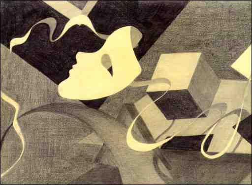 por: Julio Cesar Guerrero
Nuvem que passaIlustrações: Alfred L. Jones
Ou a saudade dos que não se deixam ser coisas,
hoje vivendo entre quem foi levado à se crer coisa...
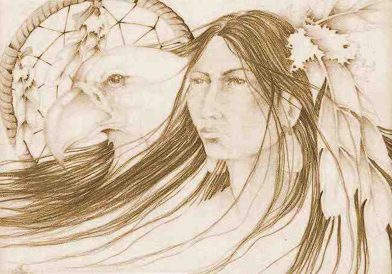 Texto I de IX do Canto de chamada
para a batalha dos (as) Guerreiros(as) do Arco Íris
Aloha viajante entre mundos, lhe convido a sentar-se nessa foguerira virtual para que eu possa partilhar contigo aquilo que foi partilhado comigo, o avô que me contou também um dia ouviu de seu avô que ouviu do seu e de boca para ouvido vai nas raízes da árvore da existência, até antes da palavra, antes da aurora dos tempos.O que alerto são os limites, palavras aludem, mas tu não podes sentir o brilho do meu olhar aqui, não podes perceber o tom da minha voz, não posso partilhar a "chincha" contigo assim te aucatela e lembra que será necessária uma grande intenção firme de tua parte para que aquilo que estou a declarar seja compreensível.
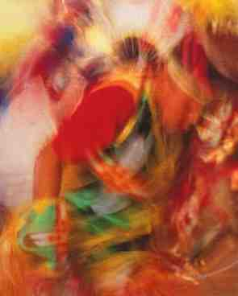 Não toquei meu tambor prá ti prá que nossos corações entrassem no mesmo compasso e com os barulhos falsos da cidade te acautela, peço que te sintonizes além da ilusão desses ritmos que nos impuseram, o ritmo das "coisas" .
Não dançamos juntos nossas danças de poder para que nossos corpos reconhecessem os clãs que nos originaram.
Entretanto, apesar de todo estes limites confio que os ventos que evoco quando escrevo estas palavras nesta manhã de chuva branda na Mantiqueira nos permitirão partilhar mais que palavras e nos colocar em comprenssão com o sentimento.
Para que haja compreensão e não caias apenas em interpretações.
Pois hoje em muitos lugares do mundo os homens e mulheres, entes mágicos e seres vivos que nunca se deixaram ser coisas começam a sair de seus esconderijos para o canto de guerra da Batalha da Tribo do Arco Íris.
Existe um sinal chegando, como uma poderosa trombeta de chifre do animal ancestral, tocada pelos lábios da própria vastidão da ETernidade, vem avisando: uma nova era está se aproximando. Acabou o tempo das coisas.
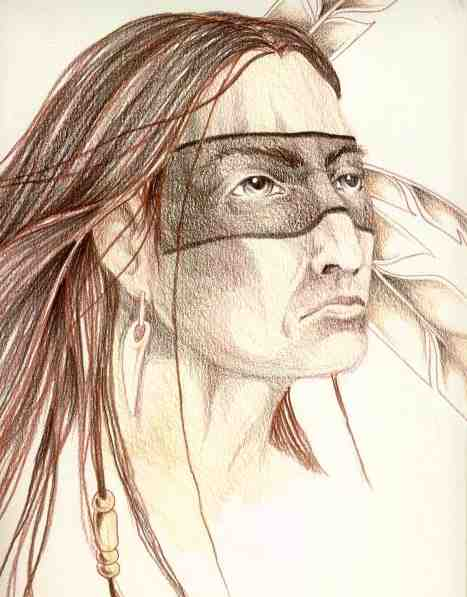 Quando roubaram o fogo e deixaram apenas o frio neste mundo, entes pactuaram com os Quichés: "Deem o coração de seus prisioneiros e traremos o fogo de volta."
Os índios quichés entregaram o sangue de seus prisioneiros e se salvaram do frio.
E assim foi se repetindo, com povos diversos que vem entregando a esperança de seus filhos, o sorriso no lábio de nossas crianças, a dignidade de nossos anciöes, a vida das matas e dos rios, assim muitos povos pacturam com este inimigo coisificador, que se espalhou pelo mundo e gerou este estado de coisas que aí está : o mundo das coisas, sem gentes, sem vida, sem alegria, só coisas.
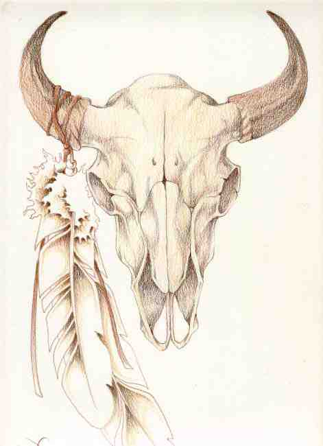 Mas alguns não aceitaram o preço. Os cakchiqueles por exemplo, não aceitaram o preço.
Os cakchiqueles, primos dos Quichés e também herdeiros dos Maias , deslizaram com os pés de pluma através da fumaça e roubaram o fogo e esconderam na cova de suas montanhas.
E então surgiram duas linhagens, os que coisificam tudo para servir ao estado que aí está e quem não se deixa dominar, pois magia viva não tem como ser contida em celas, grilhões ou conversões tacanhas.
E assim temos feitos, nós guerreiros e guerreiras da Tribo do Arco Íris, não cedemos, astutamente continuamos sendo "magia" onde tudo virava coisa.
Não somos coisas, somos magia viva.
A proposta é partilhar informações fundamentais, para podermos falar do que vem por aí, precisamos falar dos que partiram pra entender quem está voltando.
Embora partir e voltar sejam só modos de pormos marcos num vasto caminho, no eterno aqui e agora que vivemos.
Vou falar do tempo antes desse, quando cada erva rasteira, cada animal que corre, voa ou nada, cada árvore e cada pedra tinha em si um valor e um poder reconhecido e assim como os clãs humanos viviam em seus ciclos e suas formas de interagir com a vida e com o mistério da consciência também essas outras formas de vida assim existiam, assim viviam em ritmos e segredos.
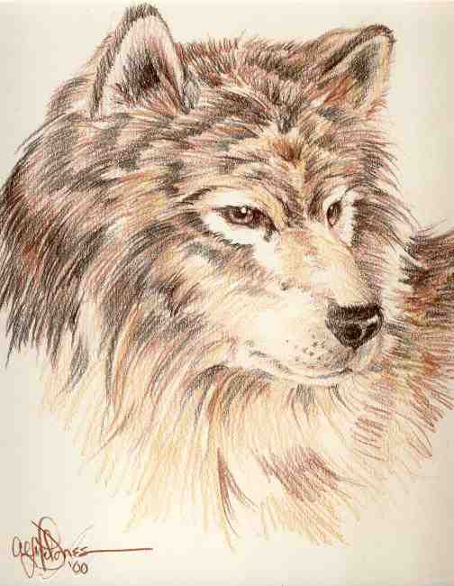 Quando nós seres humanos e animais e plantas podíamos nos comunicar de outra forma e a vida era vista como uma grande viagem da Consciência pela ETERNIDADE.
A sociedade atual substitiui tudo isso por uma interpretação que fez, nos prendeu a um conjunto de critérios validátivos e chamou isso de "realidade" .
As manadas de elefantes nas savanas, os golfinhos e baleias no mar, os pássaros em migração, o urso cinzento no frio polar, todos sempre tiveram seu papel, tudo sempre teve sua importância e cada ser humano era importante, cada árvore era importante, cada animal era importante.
Para nós das tradições nativas tudo está interligado. A Existência começa num momento mágico no qual a TOTALIDADE emana de si mesma. Vejam bem, não disse "foi criada", disse 'emana'. É um conceito completamente diferente.
Uma pedra cai em tranquilo lago, gera onda, que gera outra onda, que gera outra, assim somos nós, temos em nós uma força primordial, por isso alguns de nós são aparentados aos clãs dos animais que correm, outros dos que voam, de plantas e pedras diversas, somos faces diversas de uma mesma realidade, tudo está interligado.
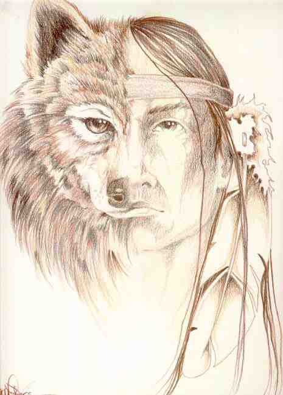 Houve um tempo em que não éramos coisas, nem cercados estávamos de coisas, mas éramos mistérios e estavamos cercados de mistérios.
Por isso a caça era momento mágico, onde as necessidades de um grupo eram saciadas, quer um grupo humano, quer um leão e sua familia, um jaguar, o côndor.
Houve um tempo que a vida surgiu, pródiga e se espalhou. Para nós, dos caminhos nativos, isso aconteceu em vários ciclos. Todas as tradições nativas falam das várias fases da vida, dos vários ciclos de existência, dos "mundos que existiram " antes desse.
É interessante notar que a perspectiva dominante, incluisve a judaíco cristã, gera um desenvolvimento no tempo, um mundo é criado, seres são criados e então as coisas passam a se desenvolver no tempo.
Para os povos nativos a abordagem é mais forte no espaço, os Maias, Hoppes, Anassazi, os Pueblos e tantos outros povos falam de mundos anteriores a esse depois da chegada nesse mundo.
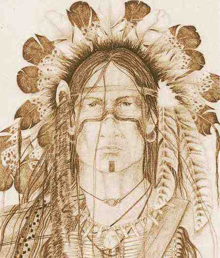 As eras não são apenas no Tempo... há mundos antes desses... Chegamos nesse mundo e agora vem o desafio: "para onde iremos? "
CAda mundo com seus seres, com a vida se manifestando.
Então temos um momento que podemos dizer "há milhares de anos atráz"... no qual na "AFrica, na Ásia, na Europa , nas Américas e na Oceania" temos povos vivendo em harmonia com a Terra, com a vida.
Seres humanos de linhagens diferentes (o homo sapiens não dominava ainda) convivendo com entes de outros mundos e com os animais e plantas se realacionando como realidades vivas.
Para nós que trilhamos os caminhos nativos há um momento fundamental para compreender quando a humanidade deixou de trilhar o caminho de sintonia com a Natureza e entrou nesta outra linha de ação, que resultou neste estado de total degradação.
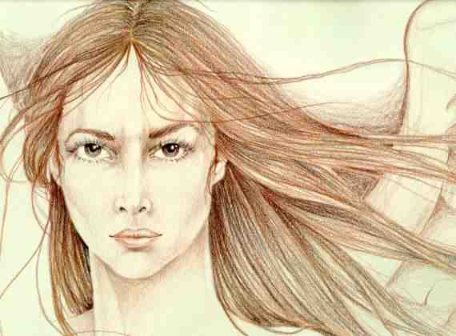 Houve um momento, que acontece de diferentes formas para cada povo, que a maneira de se relacionar do ser humano com a natureza se transforma e a vida não é mais "VIDA", mas sim coisa. A Natureza deixa de ser parte de nós mesmos e se torna "matéria prima".
O ser humano passa a exercer o poder sobre os grupos imediatos, passa a ser "dono do rebanho" depois "dono da Terra" depois "dono dos escravos e servos" e então "dono" substituí o participante. A NATUREZA não é mais viva, é coisa.
Dentro de uma relação ancestral com a natureza uma lança, uma flecha, um vaso, uma cumbuca, uma panela, tudo que é usado tem um valor muito mais amplo que o utilitário, faz parte da vida, faz parte da história daquele grupo, daquela pessoa daquela família... isto se perdeu quase completamente hoje.
E então chegamos no momento em que tudo foi tornado coisa.
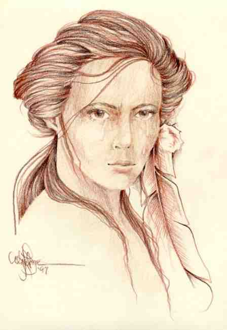 É daqui que precisamos sair, nós, herdeiros dos conquistadores, pois não podemos nos esquecer disso: somos antes de mais nada os herdeiros dos conquistadores e se vamos deixar de ser coisas, de tratar tudo como coisas, precisamos iniciar este trabalho em nós mesmos.
É o primeiro desafio.
Descoisificarmos a nós e nossas relações.
Nos coisificaram, agora nosso desafio é ir além desse estado.
Só então podemos dar os próximos passos.
Precisamos descobrir que somos mais que "o que fizeram de nós", que somos magia viva, pronta para ser desperta.
Eu, Nuvem que passa falei. Ho!
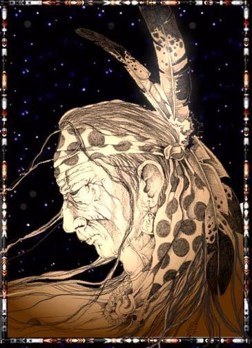
Guerrero/ Nuvem que passa
Ilustrações: Alfred L. Jones
Conheça O
IMAGICKLAN
A Irmandade das EstrelasO local onde os bruxos conspiram...
Clicke aqui para receber informações
Volta para Índice da Tribo


Instituto de Pesquisas Psíquicas Imagick
tel: 0xx.11.3813.4123